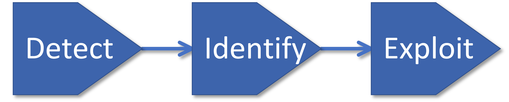
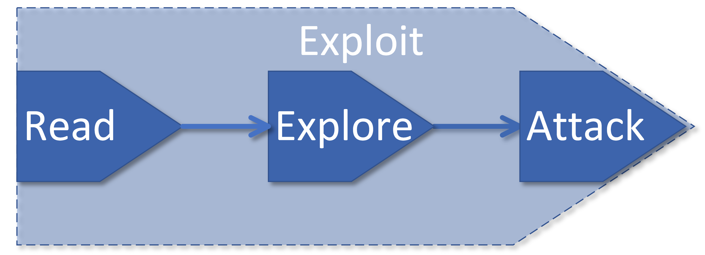

Template Injection Learning Platform
Fundamentals
To properly grasp the research, the following fundamentals are necessary. Beginning with template engines, the component that is the most crucial, an understanding of their structure is needed. Following that, the basics of template injection, or more specifically, SSTI are required to be able to comprehend the research.
Template Engine
A template engine is a software component used to insert dynamic content into static templates to generate customized documents and dynamic web pages. Template engines are widely used in web development but also in other applications which involve parsing dynamic content into preconfigured templates. For example, formal letters often follow a template pattern with customizable parts such as name, address or date.

In web application, template engines allow to separate presentation and logic. Developers generate HTML templates which define the static part of a web page and insert placeholders for dynamic content such as usernames, items selected by the user or prices. During runtime, the instructions of the programming code replace these placeholders with the relevant information.

This figure illustrates the relationship between input, template engine, and output. The database and the template file are merged into a final document through processing in the template engine.
Example: The user 'Matt' is registered at an online shop. After authentication, he searches the portal for different keyboards. The portal sends him an instant message using the following template.

The template engine replaces the placeholders with the relevant information, i.e. name, product, date and promotion code and sends him the following message.

The advantages of template engines are evident. They simplify the generation of personalized and dynamic content for the user and can respond to user interactions or data from various sources. Additionally, the re-usability of templates and programming code contributes to more efficient web application development.
Template engines are divided into two main types: Client-Side Template Engines and Server- Side Template Engines. The difference lies in where template processing occurs.
Client-Side Template Engines:
Client-Side Template Engines process data locally on the client-side to generate the HTML page on the web browser of the client. This allows dynamic content updates in the user's browser without downloading the full HTML content from the server each time. Examples of Client-Side Template Engines are Vue.js and AngularJS.
Server-Side Template Engines:
Server-Side Template Engines process data remotely on the server, meaning that the content generation is done on the server combining data from a database with the HTML code using a template engine. The final HTML content is created at the server before it is send to the client. Examples of Server-Side Template Engines are Twig (for PHP), Jinja2 (for Python), Freemarker (for Java) and EJS (for JavaScript).
This distinction between both types is relevant in the context of vulnerability and exploitation by template injection. While Client-Side Template Engines only have access to data that are visible and available to the user, Server-Side Template Engines have access to all data residing on the server. Potential vulnerabilities in Server-Side Template Engines can therefore result in significantly more serious consequences.
Template Injection
Template Injection is a security vulnerability that can occur in web applications utilizing templates, as described in the previous section, to generate dynamic content. An attacker can exploit this by injecting malicious code into a template of a web application. This code is then interpreted by the Template Engine and inserted to generate the HTML document. As a result, if there is a vulnerability in the Template Engine, the execution of the malicious code can lead to serious security issues.
There are two main types of Template Injection which differ in terms of where the injection occurs and how it is executed.
Client-Side Template Injection (CSTI)
In CSTI, template injection occurs on the client-side, meaning within the user's web browser.
Hereby, the attacker injects malicious code into a client-side template. After being generated by the server, the malicious code is processed by the user's browser. This can lead to security issues such as Cross-Site Scripting (XSS).
When rendering a web page, the template engine searches for the entered expressions and executes them as soon as it finds any of them. By entering malicious code that triggers an XSS attack, this can be exploited by an attacker. Similar to normal cross-site scripting, the malicious code can perform a variety of actions, such as stealing the victim's session token or credentials. Furthermore, it can perform any actions under the account of the attacked victim or even log the keystrokes.
Excursus: Cross site scripting (XSS):
With XSS, malicious script code is placed on normally harmless and trustworthy, but vulnerable, websites. As soon as a user visits the website and logs in with his login details, the attacker can access the user’s session. In the worst case, the attackers gain far-reaching access rights to the user's system and can therefore access local data, for example. Even a complete takeover of the affected system is possible via XSS.
Server-Side Template Injection (SSTI)
In SSTI, template injection occurs on the server-side, meaning before the output is sent to the user. This can happen when the developer of a webpage allows a user to enter own code into a template processed by the template engine. Hereby, the attacker injects malicious code into a server-side template. This can enable the attacker to gain access to confidential data or take control of the server.
In the worst case scenario, the attacker can take complete control of a web server by executing the malicious code. This does not only affect access to confidential data stored on the web server, the server could also be used to carry out attacks on other systems \cite{Avetisyan.2022b}. The most severe consequence would be remote code exexcution and complete control over the backend server.
Excursus: Remote Code Execution (RCE):
RCE is the execution of malicious code on an organization's server or network. The attacker can potentially gain complete control over the operating system and server, gain access to stored sensitive data, or control the execution and distribution of malware. This typically occurs by exploiting security vulnerabilities or weaknesses in the software running on the system.
In summary, CSTI and SSTI differ in terms of whether the template injection occurs on the client or server-side and the resulting potential security risks of the attack. The impact of CSTI typically impacts only a single user, while SSTI can have impact to multiple users or even a whole company. The consequences of a successful SSTI attack are therefore much more serious. The focus of the following work is therefore on SSTI.
Template Injection Methodology
In 2015, James Kettle published the process of a template injection attack developed by himself. This methodology is currently considered as a reference for this kind of attacks. It consists of the three main steps Detect, Identify, and Exploit with the last step Exploit divided into the three sub-steps Read, Explore, and Attack.

Detect
Usually, the first step is to find out if there is a potential vulnerability. One simple
method for this is to use special characters like those used in templates, but which are
here entered in sequence, for instance <%'${{/#@}}%>{{.
Such character sequences are also referred to as polyglots. In computer science, the term ‘polyglots’ is used when software can be interpreted by multiple programming languages. Applied to template injection, ‘polyglots’ are template expressions which can be interpreted by different template engines. Entering such character sequences has an efficiency advantage, because it shortens the process of template engine identification.
If an error is thrown, it is a sign that the syntax entered may potentially be interpreted, but not in a correct way. This may indicate the existence of a security vulnerability.
It should be noted that there are two different contexts of the vulnerability each requiring a separate detection method.
User input as plaintext:
Most template languages allow users to enter content directly within HTML tags or using their specific template syntax. This template syntax will be converted to HTML before the response is sent. For instance, in the Freemarker template engine, the line render('Hello ' + username) would lead to a response like Hello user1.
In some cases, plaintext input can also be exploited for XSS attacks. Therefore, the vulnerability is often mistaken for an XSS vulnerability. However, if the ‘username’ parameter is replaced by a mathematical operation, we can check whether the vulnerability is also susceptible to SSTI attacks.
User input as code:
In this case, the user input is entered into a template expression specific to the respective template engine. Usually this would be a variable name. This scenario can easily be overlooked during a security assessment, as a vulnerability is not obvious in this case. The initial step is to check whether an XSS vulnerability exists. Typically, HTML code is used as user input.
Identify
If the preceding investigation has revealed potential vulnerabilities that can be exploited for attacks, the next step is to identify the utilized template engine. Due to the fact that different template engines share similar syntax, using a decision tree is an appropriate method for identifying the template engine in use. This approach has the advantage of narrowing down the correct syntax step by step and thus identify the template engine.
An example of a decision tree is shown below. The green arrows indicate a successful response, while red arrows indicate a failure.

Exploit
Having identified both a vulnerability and the template engine used in the previous steps, the next process to exploit the vulnerability is undertaken. This is divided into three steps: Read, Explore, Attack.
Read:
The first step is to gather as much information as possible about the template engine in use. This includes studying the engine’s documentation for insights into the syntax used, important functions, and how variables are handled. Additionally, it is crucial to search for any security-related information in the documentation and on the Internet, which might reveal known vulnerabilities or weaknesses.
Explore:
The next step involves finding out which objects, variables, or methods are accessible for interaction. This includes reviewing lists of supported objects, attributes, and methods provided by many template engines, and attempting to discover possible objects using brute force methods if necessary. This step may also involve searching for self-developed objects by the web developer which could contain sensitive information or exploitable methods.
Attack:
Based on the knowledge gained from the previous steps, it's time to check vulnerabilities and consider the creation of a complex exploit by appropriately linking objects and methods. This may enable access to sensitive data or functions that previously seemed inaccessible.
Mitigation and Prevention of Template Injection vulnerabilities
The safest way to prevent server-side template injections is to prohibit users from changing templates or using new ones. However, when this is not feasible, certain rules should be observed to mitigate the risks.
Data Verification:
It is crucial to filter and check user-entered data for harmful elements. Implementing a whitelist approach to restrict the permitted characters and expressions can greatly reduce the risk of harmful entries.
Use of a logic-less template:
Using a logic-free template engine like Mustache helps avoid server-side vulnerabilities, as it separates the interpretation of code from visual representation.
Using a sandboxed environment:
Executing user code in a sandbox can remove dangerous modules and functions, though it may not always be feasible. In some cases, operating the template engine in a locked Docker container can effectively prevent the execution of malicious code.
Carrying out regular audits:
Performing regular security audits, including the use of vulnerability scanners, is essential to detect and eliminate vulnerabilities before they can be exploited by attackers.
References
- Palo Alto Networks: Template Injection Vulnerabilities
- USENIX Security '23: Presentation by Zhao Yudi
- PortSwigger: Server-Side Template Injection
- PortSwigger: Cross-Site Scripting
- TechTarget: Definition of Remote Code Execution (RCE)
- PortSwigger Research: Server-Side Template Injection
- Hackmanit: Maximilian Hildebrand Master Thesis on Template Injection
- PortSwigger: Preventing Server-Side Template Injection Vulnerabilities
- Digital Information World: Exploring SSTI Vulnerabilities
- Wallarm: Server-Side Template Injection (SSTI) Vulnerability